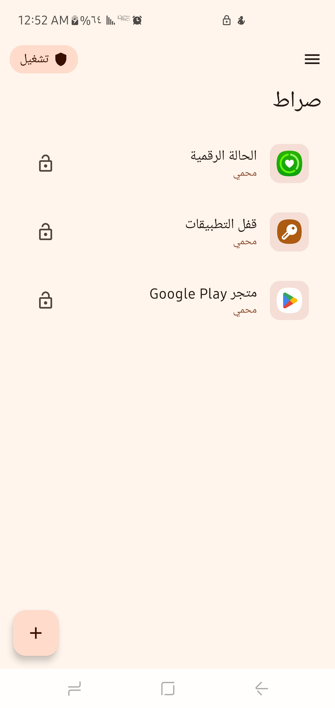

صراط هو تطبيق أندرويد مجاني ومفتوح المصدر يساعدك على الرقابة الذاتية وإدارة الوقت وحجب المحتوى غير المرغوب — يعمل بالكامل على جهازك دون إرسال أي بيانات لخارجه.

ستة أدوات تعمل معاً لمساعدتك على تحقيق أهدافك — كلها تعمل محلياً على جهازك بخصوصية تامة.
قفل أي تطبيق برمز PIN أو كلمة مرور نصية أو البصمة — حاجز نفسي قوي يمنع الوصول العشوائي.
اربط التطبيق بمشرف موثوق عبر رمز QR. المشرف فقط يستطيع تعديل الإعدادات وفتح التطبيقات المقفولة.
VPN محلي يصفّي المحتوى غير المرغوب — إباحية، قمار، تواصل اجتماعي — مع قوائم مخصصة يدوية.
تتبّع أنماط الاستخدام اليومية، رسوم بيانية تفاعلية، وتصدير تقارير CSV لفهم عاداتك ومتابعة التقدم.
مساعد AI عبر OpenRouter يحلّل عاداتك ويضع خطة تعافي مخصصة قابلة للتصدير كـ PDF.
يمنع إلغاء تثبيت التطبيقات المحمية عبر Device Admin وShizuku — حماية مستمرة لا يمكن التحايل عليها.
اكتشف كل شاشة في تطبيق صراط — من إدارة التطبيقات إلى مساعد AI ولوحة التصفية.
الشاشة الرئيسية تعرض جميع التطبيقات المحمية. يمكنك تشغيل/إيقاف الحماية العامة، إضافة تطبيقات جديدة، والبحث بسهولة.
تطبيق مجاني، مفتوح المصدر، يعمل محلياً — لا شروط مخفية، لا إعلانات، لا تتبع.